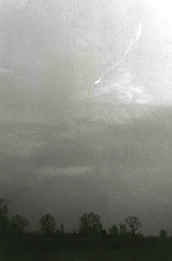
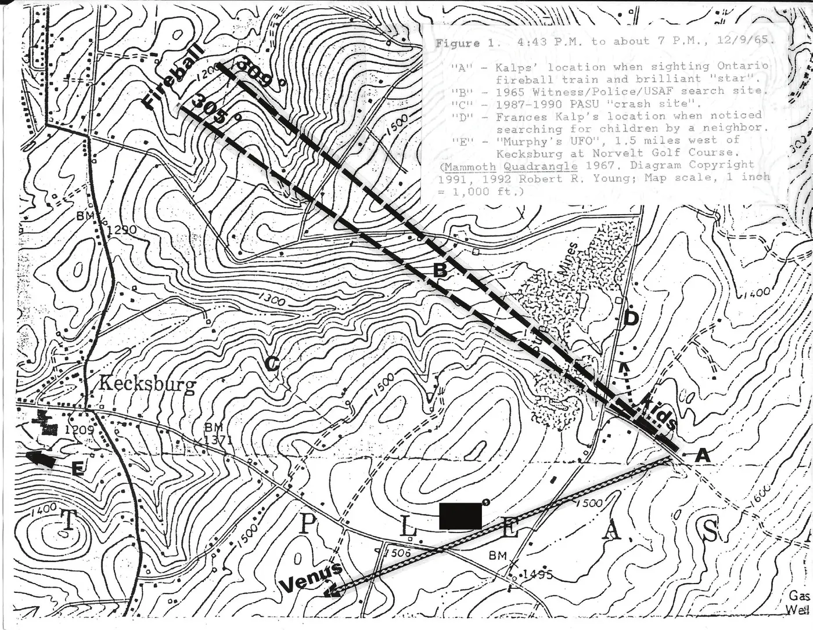

Le , une brillante boule de feu météoritique a été vue depuis 10 États et l'Ontario. Les recherches menées en 17 endroits n'ont permis de retrouver ni météorite ni débris. Les astronomes ont utilisé des photographies, un enregistrement sismique et des récits de témoins oculaires pour déterminer un point final et une orbite probable. La couverture médiatique et les enquêteurs ovni ont entretenu un récit mystérieux. Au moins 14 émissions de télévision diffusées à l'échelle nationale au cours des 24 années suivantes ont suscité de nouveaux témoins et de nouveaux récits par leurs détails spectaculaires. Des histoires reprenant les mythes classiques des soucoupes volantes ont permis à d'autres de se joindre à la narration de ce récit folklorique.
Le , à UT, à plus ou moins 10 secondes près, un brillant météore de type bolide (explosant), plus brillant qu'une pleine Lune, a été vu depuis dix États des États-Unis et la province canadienne de l'Ontario. La boule de feu visible est passée du jaune à l'orange, a duré environ 4 secondes, s'est intensifiée en un ou plusieurs points, et a finalement éclaté en laissant une traînée de « fumée » visible jusqu'à une heure Chamberlain, Von Del: Meteorites of Michigan, Bulletin 5, Michigan Geological Survey, Lansing, Michigan, , pp. 1-5.
Un chercheur a estimé qu'il pouvait y avoir eu 1,3 million de témoins
potentiels . Des centaines de
signalements ont été recueillis pour cet objet visible dans le ciel lumineux juste avant le coucher du Soleil. G. W. Wetherill, professeur de géophysique et de géologie à l'université de Californie à Los
Angeles, a recueilli les récits de plus de 100 témoins, dont certains sur la rive sud du lac
Érié qui ont signalé que la boule de feu disparaissait vers le nord au-dessus du lac. Presque tous ceux
qui ont vu la boule de feu l'ont crue beaucoup plus proche qu'elle ne l'était réellement
, écrit-il Great Lakes Fireball, Sky & Telescope, ,
pp. 78-79 and 82. C'est particulièrement vrai pour les observateurs situés à la périphérie de la zone de
visibilité, où les météores semblent tomber juste de l'autre côté des arbres ou des bâtiments.
Dans les récits publiés en , on disait qu'elle s'était « écrasée » ou avait « atterri » en au moins 17 endroits dans six États, et les enquêteurs en ont trouvé beaucoup d'autres. Plusieurs témoins ont affirmé avoir trouvé des roches semblables à des scories, et de vieilles paillettes radar ont été retrouvées. Aucun de ces matériaux n'a jamais été relié au météore Chamberlain, Von Del: Meteorites of Michigan, Bulletin 5, Michigan Geological Survey, Lansing, Michigan, , pp. 1-5. Le signalement le plus spectaculaire est venu de Détroit et de Windsor (Ontario), où des pilotes, des observateurs météorologiques et des membres de la garde côtière américaine ont signalé qu'un objet volant avait « explosé » au-dessus de Détroit. Les bateaux de la garde côtière envoyés sur le lac Sainte-Claire n'ont rien trouvé.
Heureusement, des photographies de la traînée ont été prises en l'espace de quelques secondes par deux photographes éloignés l'un de l'autre dans le Michigan, Lowell Wright à Orchard Lake (Michigan), et Richard P. Champine à l'est de Pontiac (figure 1). Celles-ci, ainsi que les données d'une station sismique du laboratoire de géophysique de l'université du Michigan à Ypsilanti, ont permis aux astronomes Von Del Chamberlain et David J. Krause de déterminer un point final et une orbite estimée. Il s'est avéré que la boule de feu tombait selon une trajectoire très inclinée vers le nord-est, au-dessus de l'extrême sud-ouest de l'Ontario. Bien que la vitesse de l'objet dans l'atmosphère soit incertaine, une valeur de 14,5 km/s a été retenue d'après les estimations des photographes. Cela donnerait une orbite s'étendant jusqu'entre Mars et Jupiter, près de la ceinture d'astéroïdes, source de nombreux météores brillants. L'objet aurait été sur une orbite prograde, comme la plupart des objets du système solaire Chamberlain, Von Del & Krause, David J.: The Fireball of Dec. 9, 1965 - Part I, Royal Astronomical Society of Canada Journal, vol. 61, n° 4, . Cette vitesse serait tout à fait dans la gamme des vitesses des météores, et environ le double de celle de débris spatiaux retombant d'une orbite basse en déclin.

Chamberlain et Krause ont obtenu 66 récits de témoins oculaires ; Wetherill, 23 récits de pilotes par l'intermédiaire de l'administration fédérale de l'aviation américaine, dont beaucoup pensaient qu'un avion s'était abîmé au-dessus du lac. Des astronomes canadiens ont également utilisé 120 signalements de témoins oculaires pour établir le point final et rechercher des météorites sur le terrain enneigé. Aucune n'a été trouvée Douglas, J.A.V.: The Fireball of Dec. 9, 1965, Essex County, Ontario, Proceedings of the Tenth Associate Meeting on Meteoritics, Appendix 1, Council Chambers of the National Council of Research Laboratories, Ottawa, .
Tous les récits de témoins oculaires diffusés et publiés en pour lesquels une direction était donnée ou peut être déduite peuvent s'expliquer par la boule de feu de (EST) au-dessus du lac Érié, par les recherches de ses débris et par l'excitation qui les a accompagnées The author conducted a literature search for accounts of the events of , as well as subsequent claims and investigations. All Pennsylvania daily, weekly and selected out-of-state newspapers for mid- were searched. Pittsburgh and Westmoreland County papers were checked into , around anniversaries of the event and dates of media attention. The General Science Index, Reader’s Guide to Periodic Literature and Sky & Telescope were checked. Seven television programs, a lecture and a radio program were reviewed..
Le public était cependant préparé à des explications « venues d'un autre monde ». Ce jour-là, les journaux et la télévision étaient remplis de nouvelles sur le lancement d'un vaisseau spatial américain Gemini avec deux astronautes, en vue du premier rendez-vous de deux vaisseaux spatiaux habités, Gemini 6 et 7.
À Pittsburgh (Pennsylvanie), Frank Edwards, conférencier, animateur et écrivain bien connu sur les soucoupes volantes, participait à une émission à appels d'auditeurs sur la radio KDKA, d'une puissance de 50 000 watts, pour promouvoir sa populaire conférence payante du lendemain dans cette ville, où il devait traiter des dissimulations du gouvernement et des traditions sur les soucoupes. Edwards se souvenait qu'après la boule de feu, les standards avaient été submergés d'appels. Il attribuait l'événement à un météore brillant Edwards, Frank: Flying Saucers - Here and Now!, New York, Bantam Books, , p. 117.
L'écrivain sur les ovnis Ivan Sanderson a envoyé trois jours plus tard à la North American Newspaper Alliance un article largement repris, puis réimprimé dans le magazine FATE. Il n'a apparemment parlé à aucun témoin, s'appuyant sur des appels aux permanences de la police d'État et sur des articles de presse Sanderson, Ivan T.: The Abominable Space Thing, North American Newspaper Alliance; reprinted in FATE as Something Landed in Pennsylvania, , p. 33. Il n'a utilisé que les signalements publiés de témoins situés en quatre endroits, en ignorant des dizaines d'autres, et a naïvement supposé que la boule de feu se trouvait là où ils étaient, et non qu'elle était visible à des centaines de kilomètres à la ronde. Ses vitesses reposaient sur des heures publiées très variables ; il a commis une erreur en remplaçant des miles par minute par des miles par heure, ralentissant ainsi 60 fois le vol de son objet. Sa trajectoire supposée, tracée sur une carte dessinée à la main, de Lapeer (Michigan) à Elyria (Ohio), aurait un azimut de 152 degrés, et d'Elyria à Kecksburg (Pennsylvanie), un azimut de 120 degrés, soit une différence de 32 degrés, et non de 25 degrés comme l'affirmait Sanderson. Un objet suivant la trajectoire de Sanderson serait passé au-dessus de Pittsburgh, où il n'a apparemment pas été remarqué, mais ne serait pas passé à moins de 26 miles (42 km) au sud de Kecksburg, son point final supposé. S'il avait utilisé une vraie carte, comme je l'ai fait Lake Erie, International Map of the World, Reston, Virginia, USGS, , ou si les passionnés d'ovnis avaient simplement vérifié ses calculs, l'article de Sanderson, qui a lancé le mythe d'un « ovni en manœuvre » se déplaçant lentement, aurait été écarté dès .
L'année suivante, Edwards publiait son livre populaire Flying Saucers - Serious Business,
le premier livre sur les soucoupes à se vendre à un million d'exemplaires. Il y faisait des affirmations
fantastiques sur l'événement du , très semblables à celles qu'il faisait
sur un incident de à Roswell (Nouveau-Mexique), et qu'il répétait
depuis des années dans ses conférences populaires. Il citait Sanderson de travers, affirmant que d'importants
contingents de diverses unités militaires
étaient déjà présents
lorsque la police et les chercheurs
sont arrivés. Il devait avoir des doutes, car dans son livre suivant, Flying Saucers - Here and
Now!, lorsqu'il énumérait de prétendus crashs
d'ovnis et débris récupérés, il n'a jamais mentionné l'incident.
L'un des endroits où des témoins ont vu la boule de feu ou sa traînée nuageuse était Kecksburg, en Pennsylvanie, un petit village situé à environ 30 miles (48 km) à l'est de Pittsburgh. Là,
Nevin Kalp, 8 ans, a dit à sa mère qu'il avait vu une étoile en feu
. Sortant, sa mère a déclaré avoir vu une
bouffée de fumée au-dessus des bois voisins. Elle n'a rien fait pendant plus d'une heure, jusqu'à ce qu'elle entende
Edwards parler d'ovnis sur KDKA. Le témoin a alors appelé la station de radio locale WHJB de Greensburg (Pennsylvanie), qui annonçait un accident d'avion,
pour lui dire qu'il s'agissait de la boule de feu ; puis elle a appelé la police d'État de Pennsylvanie. La station
a transmis une dépêche aux agences de presse. L'auteur a tracé une ligne depuis l'emplacement des Kalp en direction
de la position de la boule de feu du lac Érié, à un azimut de 305 à 309 degrés, pointant directement vers le site
des recherches ultérieures (figure 2) Lake Erie, International Map of the
World, Reston, Virginia, USGS, Young, Robert R., in SUNlite, vol. 3,
n° 6, , p. 11, http://www.astronomyufo.com/UFO/SUNlite3_6.pdf.
La police et les pompiers locaux ont cherché sans succès jusque vers .

En , l'armée de l'air américaine enquêtait sur les signalements d'ovnis en vertu du règlement 200-2 de l'Air Force United States Air Force: Air Force Regulation No. 200-2, Unidentified Flying Objects, Washington, D.C., Department of the Air Force, . Son projet Blue Book, situé au Centre technique aérien de la base aérienne de Wright-Patterson, à Dayton (Ohio), recevait les premiers signalements des « officiers ovni » de chaque installation de l'USAF. Ils semblaient particulièrement intéressés par la récupération éventuelle de débris spatiaux retombant sur Terre Craig, Roy: UFOs: An Insider’s View of the Official Quest for Evidence, Denton, University of North Texas Press, , p. 177.
Blue Book a reçu vers (EST) un appel du commandement de la défense aérienne l'avertissant de s'attendre à des signalements d'ovnis et relayant des informations sur les signalements reçus par le secteur de défense aérienne de Détroit. Après une dépêche de l'agence AP, il fut décidé d'envoyer quatre hommes de l'installation de l'USAF la plus proche, un site radar à l'ouest de Pittsburgh, où le 662e escadron radar de l'USAF (SAGE) était basé sur l'installation de soutien du génie de l'armée de terre américaine à Oakdale. L'escadron envoya aussi trois hommes à Erie (Pennsylvanie) pour enquêter sur le signalement par un pilote de la boule de feu à l'ouest, au-dessus du lac. Cette enquête d'Erie (Pennsylvanie) semble toujours ignorée par les partisans d'un ovni, car elle ne soutient pas leur théorie d'un objet en manœuvre dont la course se serait achevée près de Kecksburg.
Le mythe de l'implication de l'armée de terre américaine semble être né
lorsqu'un reporter local a parlé à un pompier qui disait que le génie de l'armée
arrivait. Ce fut rapporté
dans une première édition du journal et répété ensuite
ailleurs. Aucun article de presse ni aucun témoin de n'a en réalité rapporté
avoir vu le « génie de l'armée ».
Le directeur de l'information de la radio WHJB, John Murphy, a commencé à émettre en direct depuis ce qu'il croyait être un site de crash, où il disait voir de la fumée et des étincelles, à environ 1,5 mile (2,4 km) à l'ouest de Kecksburg, là où l'on brûlait des broussailles et des arbres sur le terrain de golf de Norvelt. Il a fini par se rendre sur le véritable lieu des recherches, où il a interrogé des badauds et des policiers. Certains habitants ont surnommé l'incendie, par dérision, « l'ovni de Murphy », immortalisant son rôle dans la création du mythe du crash.
La semaine suivante, Murphy a produit une émission de radio spéciale, Object in the Woods
(L'objet dans les bois), dans laquelle il ne signalait aucune présence militaire importante, hormis trois hommes de
l'Air Force vus sur la banquette arrière d'une voiture de police. Il les a identifiés comme membres du Army 662 Radar Squadron
(« 662e escadron radar de l'armée de terre »), ce qui montre que
cinq jours plus tard il était encore confus quant à l'identité des militaires présents. Cela a entretenu le mythe de
l'implication de l'armée de terre. La station a inclus une déclaration selon laquelle aucun organisme
gouvernemental n'était intervenu au sujet de l'émission, et qu'elle avait obtenu toute la coopération nécessaire de
la police et des autres responsables Object in the woods, WHJB radio, transcript of the 30th
anniversary rebroadcast about the Kecksburg incident, . Il n'existe aucune preuve documentaire ou autre que quiconque, en dehors de ces
enquêteurs ovni de l'Air Force, de la police d'État et des pompiers locaux, ait été impliqué.
Les hommes du 662e escadron radar sont arrivés vers . À ce moment-là, des pompiers signalaient des « lumières bleues » clignotant par intermittence dans les bois. Les hommes de l'Air Force ont voulu aller voir, laissant un officier à la caserne de police de Greensburg pour communiquer avec Oakdale. Eux et la police ont mené une deuxième recherche à la lampe torche et avec un camion d'éclairage des pompiers. Une route (plus tard officiellement baptisée « Meteor Rd. ») avait été fermée à ses deux extrémités par le chef des pompiers pour permettre l'éventuel accès des camions de pompiers à ce qui avait d'abord été signalé comme un accident d'avion. Les deux barrages routiers étaient tenus par des membres de la police auxiliaire du canton de Mt. Pleasant, et non par les militaires.
Les lumières clignotantes étaient produites par plusieurs adolescents qui couraient dans les bois en déclenchant un flash d'appareil photo. L'auteur a obtenu d'un participant une longue déclaration signée qui peut rendre compte de l'emplacement et de la chronologie des lumières, lesquelles ont attiré les projecteurs d'une foule massée le long de Meteor Rd. Young, Robert R., in SUNlite, vol. 3, n° 6, , p. 11, http://www.astronomyufo.com/UFO/SUNlite3_6.pdf Le journal local a rapporté dans un éditorial deux jours plus tard que sa rédaction avait conclu que rien n'était tombé et que les lumières provenaient d'une équipe de journal télévisé et de photographes dans les bois Flying Saucers, Again, Editorial, Tribune-Review, Greensburg, Pennsylvania, , p. 8.
La deuxième recherche a elle aussi été infructueuse, et les hommes de l'Air Force sont partis vers le lendemain matin. Le chef de Blue Book, le major Hector Quintanilla, a indiqué à ses supérieurs du poste de commandement de l'Air Force que la recherche avait été vaine et que la boule de feu avait été un météore Files of Project Blue Book, , National Archives, Washington, D.C.. L'Air Force a annoncé le lendemain qu'il s'agissait d'un météore The Pittsburgh Press, .
Trois journaux, une station de télévision de Pittsburgh et Murphy étaient présents pendant les recherches et
n'ont jamais signalé de troupes armées, de convois ni d'objets dans les bois. Le lendemain, en plein jour, la police
d'État et les médias ont mené une troisième recherche, sans rien trouver. Le commandant de la Troop A de la police
d'État, Joseph Dussia, a déclaré que la recherche n'a absolument rien révélé
et que les gens avaient fait
une montagne d'une taupinière
Searchers fail to find ‘object.’, The
Tribune-Review (late city edition), Greensburg, Pennsylvania, ,
p. 1.
Les grands groupes civils d'étude des ovnis des années n'ont pas pris la boule de feu au sérieux. Le plus important, le National Investigations Committee on Aerial Phenomena, avait une section à Pittsburgh et y voyait un météore NICAP files are in the possession of the J. Allen Hynek Center for UFO Studies, Chicago, Illinois. Letter to author confirming the meteor designation from Mark Rodeghier. Ni lui ni l'Aerial Phenomenon Research Organization n'ont soumis le cas lors des auditions du Congrès ni au projet de l'université du Colorado financé par l'Air Force quelques années plus tard.
Quatorze ans plus tard, avec l'aide de passionnés d'ovnis, l'histoire a été ravivée lors d'une émission à appels d'auditeurs sur la radio KDKA le . Des partisans des ovnis, Leonard Stringfield, éditeur d'histoires d'ovnis de l'Ohio, Clark McClelland, un enquêteur local, et les célèbres « enlevés » Travis Walton et Betty Hill, ont répondu aux appels. McClelland a évoqué l'incident de et la possibilité qu'un vaisseau spatial soviétique, Cosmos 96, se soit écrasé à Kecksburg. Quatre auditeurs ont affirmé avoir été témoins en The John Signa Show, KDKA-Radio, Pittsburgh, [Note de RR0] Le texte date l'émission du 6 novembre 1979, tandis que la référence citée la date du 16 novembre 1979.. Deux ont dit n'avoir vu que des lumières, mais un autre a dit avoir été le chef des pompiers de Kecksburg et a décrit plus tard s'être trouvé à 25 pieds (7,6 m) d'un gros camion militaire de 10 tonnes (9,1 tonnes métriques) entouré de gardes militaires armés, avec sur le plateau un objet de 6 pieds sur 7 et long de 17 pieds (1,8 x 2,1 x 5,2 m). Ce témoin a raconté son histoire en diverses versions pendant dix ans. Il n'était pas le chef des pompiers en , mais l'est devenu plus tard, et il était président de la compagnie de pompiers de Kecksburg en lorsqu'une émission de télévision Unsolved Mysteries a été tournée avec l'aide de certains membres et partisans de la compagnie de pompiers.
En , les pompiers de Kecksburg ont organisé une « célébration du 25e anniversaire » et un « bal ovni », vendant au profit de la compagnie des t-shirts, casquettes, plaques d'immatriculation et vêtements commémoratifs. La maquette d'ovni de 300 livres (136 kg) utilisée dans l'émission de télévision a été installée sur le toit de l'ancienne caserne des pompiers UFO celebration, The Tribune-Review (Greensburg, Pennsylvania), Picture of TV “acorn” at fire hall, Robert Sheaffer’s Bad UFOs blog, https://badufos.blogspot.com/2014/01/discovery-canada-serves-up-kecksburg.html. Curieusement, en , il y avait eu une célébration du 50e anniversaire et un banquet pour la compagnie de pompiers. Lors des évocations historiques, il n'avait été fait aucune mention de l'incident de ni d'un ovni Personal communications with Kecksburg Fire Chief Edward Myers. Pendant le tournage en ville, on a appris que le « chef des pompiers » du film ne l'était pas ; son entretien et sa participation ont été supprimés, et un acteur local bien connu a joué son rôle.
Un vaisseau spatial soviétique destiné à Vénus, Venera 3, également connu sous le nom de Cosmos
96, avait été lancé 16 jours plus tôt. Il n'a pas réussi à quitter son orbite d'attente et est rentré dans
l'atmosphère au-dessus du nord du Canada 13 heures avant la boule de feu des Grands Lacs Printy, Tim: The Cosmos 96 Connection, SUNlite, vol. 3, n° 6, , p. 33, http://www.astronomyufo.com/UFO/SUNlite3_6.pdf.
Cet événement fortuit a égaré les enquêteurs pendant de nombreuses années ; ce fut la première de plusieurs
tentatives infructueuses d'expliquer l'histoire de Kecksburg. En , lors d'une
exposition dans un centre commercial pour une « Semaine internationale d'information sur les ovnis », un groupe
ufologique local a présenté les événements de Kecksburg en exposant la photo d'un tableau de Venera 3 par un
artiste soviétique, avec des inscriptions en cyrillique sur son pourtour. De la foule est sorti un témoin, James
Romansky, qui a dit avoir vu dans les bois un objet en forme de gland, portant des hiéroglyphes
.
L'emplacement qu'il indiquait correspondait à l'emplacement estimé auquel les enquêteurs étaient arrivés, ce qui les
a convaincus qu'il était « le vrai de vrai ». Un journal local avait publié en
un emplacement erroné, situant la recherche à 1/2 mile (800 m) de Kecksburg, alors que la recherche réelle avait eu
lieu dans une autre ferme, à 1 mile (1,6 km) du bourg Young, Robert R., in SUNlite, vol. 3, n° 6, , p. 11, http://www.astronomyufo.com/UFO/SUNlite3_6.pdf.
Pendant des décennies, ce fut le seul emplacement publié. Des habitants qui avaient été témoins en ont dit à l'auteur que c'est ainsi qu'ils savent si un nouveau prétendu
participant était vraiment là.
L'événement qui a propulsé la recherche de Kecksburg dans « l'espace » fut l'émission Unsolved Mysteries de la chaîne NBC, le Unsolved Mysteries, NBC-TV, , repeated , and at least once yearly during ; Sightings, Fox Television Network, , rebroadcast and later; The Montell Williams Show, ; Kecksburg on the Sci-Fi channel, ; UFO files: Kecksburg UFO, History Channel, ; UFO Hunters, History Channel, ; Close Encounters, Discovery Canada, . Ce fut le dixième programme le plus regardé d'une semaine où étaient lancées les nouvelles émissions de la saison. Il a touché des dizaines de millions de personnes dans environ 17,7 % des foyers américains équipés d'un téléviseur, soit 30 % des postes allumés Broadcasting, . Cites Nielson and its own research, p. 40. Il a été rediffusé de nombreuses fois. Au cours des 24 années suivantes, six autres émissions télévisées nationales américaines et canadiennes ont présenté et mis en scène l'ovni de Kecksburg et les affirmations de récupération, parfois avec des effets dramatiques apportés par de nouveaux prétendus témoins. Plusieurs incluaient bien des déclarations sur la boule de feu météoritique par des sceptiques du crash, dont l'auteur, mais la plupart reprennent l'histoire spectaculaire présentée pour la première fois dans cette émission de , y compris une vidéo produite à titre privé et vendue par l'ufologue local Stan Gordon.
Les promoteurs du crash affirmaient qu'il y avait peu de sceptiques à Kecksburg, mais cinq sceptiques avaient en fait été interrogés par un producteur de l'émission Unsolved Mysteries, trois acceptant de passer devant la caméra. Ils n'ont jamais été contactés pendant le tournage Porch, Carl: letter to the author, ; phone interview . 45 habitants et propriétaires ont envoyé aux producteurs une pétition affirmant que le crash et la récupération n'avaient pas eu lieu. Ils y étaient. L'astronome Von Del Chamberlain avait été contacté au sujet de ses recherches six mois plus tôt, avait envoyé une copie de son article et avait été interrogé par téléphone. Il avait insisté sur le fait que l'objet était un météore, et non un mystère. Cela n'a pas été mentionné dans l'émission, et l'existence des photos du Michigan utilisées dans son article n'a pas non plus été révélée Chamberlain, Von Del: letter to the author, . On y a montré à la place Stan Gordon esquissant une carte à la main en récitant la vieille théorie de Sanderson d'un ovni en manœuvre.
Deux témoins affirmant avoir vu l'objet dans les bois ont noté que l'objet en forme de gland représenté dans l'émission était plus court que ce qu'ils avaient vu, mais ont compris que c'était pour des raisons de « transport ». Il semble que les producteurs de l'émission n'aient pas pu se procurer un vieux camion militaire de « dix tonnes » (9,1 tonnes métriques), et lui aient substitué un camion de 2,5 tonnes (2,3 tonnes métriques). Les récits de « témoins » ultérieurs et les représentations du mythe ont dès lors semblé correspondre à la scène emblématique présentée pour la première fois par Unsolved Mysteries. L'objet mystérieux de 17 pieds de long et 7 pieds de large s'était métamorphosé en une forme de gland semblable à la version de propagande de Cosmos 96.
Plus de 100 « nouveaux » témoins ont appelé la ligne téléphonique d'Unsolved Mysteries après la diffusion de . Si beaucoup se souvenaient de l'événement, des recherches et de l'excitation, trois hommes ont affirmé avoir vu l'objet dans des bases militaires ultrasecrètes de l'Ohio Santus, Sharon: Kecksburg UFO Seen at A.F. bases, The Tribune-Review (Greensburg, Pennsylvania), , pp. A1, A10, ainsi que des « corps d'extraterrestres » et un « vaisseau spatial ». Bientôt, des « glands » identiques apparaissaient dans des signalements venus de Californie et d'URSS.
Que serait une histoire de crash de soucoupe sans les corps des petits pilotes ? Kecksburg aurait tout. Feu Robert D. Barry, évangéliste des soucoupes volantes et fondateur du 20th Century UFO Bureau, a annoncé dans son émission de télévision hebdomadaire que les militaires avaient récupéré des corps à Kecksburg, en citant une source du comté de Westmoreland (région de Kecksburg). Son émission était reprise par une vingtaine de chaînes de télévision hertziennes et câblées et pouvait être reçue par satellite dans une grande partie des États-Unis et du Canada. Il a retiré cette affirmation trois semaines plus tard ET Monitor, WGCB-TV, Red Lion, Pennsylvania, .
Bientôt apparurent des histoires de personnes se présentant comme d'anciens militaires, situant l'ovni récupéré dans les bases aériennes de Lockbourne et de Wright-Patterson, dans l'Ohio McClelland, Clark & Stringfield, Leonard H.: report and footnote in The UFO Crash/Retrieval Syndrome Status Report II, Leonard H. Stringfield (ed.), Seguin, Texas, Mutual UFO Network, pp. 19-20. Les récits de Lockbourne présentent de curieuses similitudes avec une histoire de venue de Columbus, qui s'est révélée fausse ou non étayée Moseley, James W.: The Wright Field Story …. or ‘Who’s Lying?,’, UFO Crash Secrets at Wright/Patterson Air Force Base, Abelard, , pp. 48-52. Des passages de cette histoire antérieure semblent avoir été repris presque mot pour mot de Behind the Flying Saucers de Frank Scully. Ce best-seller de , l'un des premiers livres américains sur les soucoupes volantes, reposait sur un canular d'un mystérieux « Dr Gee », en réalité Leo Gebaur, propriétaire d'un magasin de pièces détachées radio à Phoenix, et il a inspiré de nombreuses histoires de « crash d'ovni ».
Il existe 19 parallèles entre le crash de soucoupe de Columbus de et le récit
de Scully, dont huit qui semblent avoir été repris mot pour mot[Note de RR0] La liste de
références du chapitre comprend une référence que le texte n'appelle jamais, et qui porte sur ces parallèles :
Young, Robert R., in SUNlite, vol. 3, n° 6, , pp. 36-37, Tables 1 and 2, http://www.astronomyufo.com/UFO/SUNlite3_6.pdf.
Par exemple, Scully avait appelé une WAC du renseignement de
l'armée de terre à se manifester publiquement pour donner un point de vue de femme sur la façon dont les
extraterrestres parvenaient à vivre dans les disques de 30 pieds (11 m). « Miss Y » a d'abord été décrite comme une
WAC de la base aérienne de Wright-Patterson, un quartier général du renseignement de l'Air Force, mais c'était faux.
Scully décrivait un disque sans équipage de 36 pieds de diamètre
; « Miss Y », une soucoupe sans équipage de
30 à 40 pieds (9,1 à 12,2 m).
De plus, dans aucune des deux histoires les soucoupes ne s'étaient écrasées. Les vaisseaux du « Dr Gee » s'étaient
posés en flottement automatique
; « Miss Y » disait qu'ils flottèrent doucement jusqu'au sol
. Les
soucoupes du « Dr Gee » avaient des hublots à travers lesquels ils peuvent voir dehors, mais personne ne peut
voir dedans... semi-argentés pour arrêter les rayons cosmiques
; tandis que la soucoupe de Columbus était
Pas comme les nôtres... des hublots en verre sans tain invisibles de l'extérieur
. Deux métaux qui nous
sont inconnus
et introuvables sur cette planète
devenaient Un ou plusieurs alliages introuvables sur
cette planète
. Les deux disques étaient propulsés par une énergie magnétique
, et ainsi de suite.
« Miss Y » a peut-être confirmé par inadvertance la source de son histoire. Bien qu'elle ait affirmé qu'on lui
avait dit que les photos et les informations qu'elle avait vues étaient classées sous une désignation de sécurité
maximale
, elle a dit à James W. Moseley que les faits
qu'elle lui donnait étaient de notoriété publique et qu'elle ne violait pas le secret en les lui disant
.
Il semble que 15 éléments parallèles entre le canular de et les histoires de l'Ohio de suggèrent fortement que la filière de Columbus du « crash d'ovni » de Kecksburg n'est rien de plus qu'une reprise de ce canular vieux de 67 ans et de l'ancêtre, vieux de 70 ans, des récits américains de soucoupes volantes écrasées.
Le crash d'ovni de Kecksburg est un récit folklorique aux éléments de plus en plus divergents et bizarres, permettant à de nombreux nouveaux participants de se joindre à la narration du mythe.
Un « modèle » proposé pour les légendes américaines de soucoupes écrasées pourrait comprendre : 1. un événement avec au moins un témoin, 2. l'intérêt des médias locaux, 3. l'implication de passionnés ou d'enquêteurs ovni, 4. l'adhésion de témoins supplémentaires au récit, 5. une excitation médiatique généralisée, 6. l'apparition de nouvelles affirmations de témoins à mesure que les récits des témoins sont réfutés et 7. l'élaboration par les ufologues de théories de plus en plus bizarres, comprenant parfois l'adoption de légendes classiques de soucoupes écrasées.
L'auteur exprime sa reconnaissance à Tim Printy, Robert Sheaffer, James Oberg, Von Del Chamberlain et Richard P. Champine pour leur coopération et leur travail, qui ont permis que l'histoire exacte de la boule de feu des Grands Lacs du soit racontée et mise à la disposition de tous.